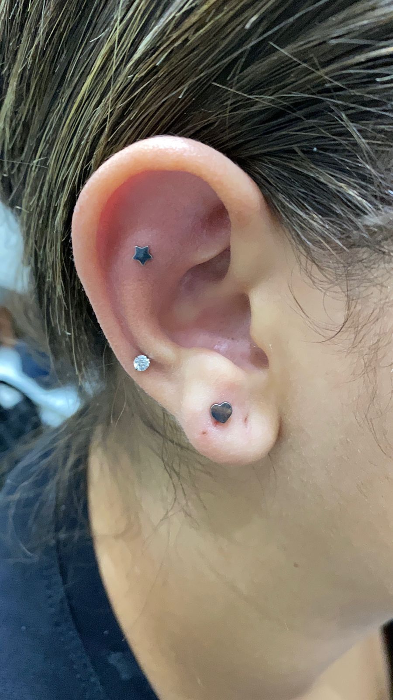

Olá! Meu nome é Emille, sou especialista em furo humanizado e apaixonada por proporcionar uma experiência segura, acolhedora e delicada para cada cliente. Trabalho com técnicas profissionais, materiais esterilizados e total cuidado para garantir um procedimento tranquilo, rápido e quase indolor.
Meu atendimento é personalizado, feito com carinho, paciência e atenção a cada detalhe sempre respeitando o tempo e o conforto de quem está comigo.
Seja para você ou para quem você ama, estou aqui para tornar esse momento especial e inesquecível!
O furo humanizado é uma técnica de perfuração que prioriza o conforto, a segurança e o bem-estar durante todo o procedimento. Ele é realizado com materiais esterilizados, técnicas profissionais e um atendimento acolhedor, garantindo uma experiência tranquila, rápida e quase indolor. Esse método é especialmente indicado para bebês, crianças e adultos que desejam um processo seguro, cuidadoso e respeitoso com cada momento.
Combinando técnica, atenção e respeito, realizo perfurações de forma segura e humanizada. Priorizar o bem-estar do cliente é meu compromisso, entregando um procedimento preciso, confortável e feito conforme as melhores práticas da área.
Aqui, cada furo é feito com cuidado, carinho e respeito ao seu momento. Utilizamos técnicas seguras e humanizadas, priorizando seu conforto do início ao fim. Do primeiro furo ao acompanhamento pós-procedimento, nossa missão é proporcionar uma experiência tranquila, segura e especial.
Porque aqui cada furo é tratado como algo único: segurança máxima, higiene impecável e uma técnica humanizada que reduz dor, medo e riscos. Oferecemos atendimento atencioso, resultado perfeito e uma experiência tranquila do início ao fim. Aqui, você não é só mais um cliente — você é prioridade.
Ainda tem dúvidas? Fale conosco pelo WhatsApp.
Entre em contato pelo WhatsApp e garanta um atendimento seguro, delicado e humanizado.
Fale comigo agora